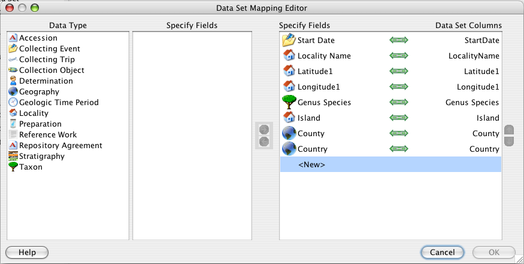

To edit the Data Set Mapping, right-button click on the Data Set. A context menu will appear:
Edit Data Set Mapping Context Menu
Click on 'Edit Data Set Mapping' to display the Data Set Mapping Editor dialog:

Data Set Mapping Editor
The buttons in the dialog enable columns to be mapped, unmapped, added, deleted and reordered:
| Map | Adds the field to the column list | |
| Unmap | Removes the field from the list of columns | |
| Reorder up | Moves the selected field up | |
| Reorder down | Moves the selected field down |
To unmap a column:
To remap a column:
To add a column:
A  (link) icon will appear identifying that the column and field are the same heading.
(link) icon will appear identifying that the column and field are the same heading.
To reorder the columns:
Note: A field may only map once. Specify fields that are mapped display a green check mark next to their name in the Specify field list confirming that they are in use.